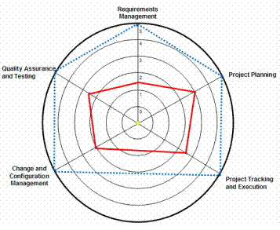

| Example: Software Development Lifecycle Gap Analysis |
 |
|
Relationships
| Related Elements |
|---|
Main Description
This is an example of how opportunities for software capability improvement can be summarized in an overview section of a Development Organization Assessment. This assessment focused on 5 CMMI Process Areas
The chart plots current performance compared to recommended performance in each process area. In this sample chart for SDLC GAP Analysis Summary, the organization lacks a consistent structure for the software development process across projects. Specifically, the organization lacks:
 Note: The red line in the above chart represents current level, and the dotted blue represents the recommended level. The scale for the rings is ring 5 is the best practice, level goes down to ring 1, which is poor, and ring 0 means no process at all. |
Licensed Materials - Property of IBM |